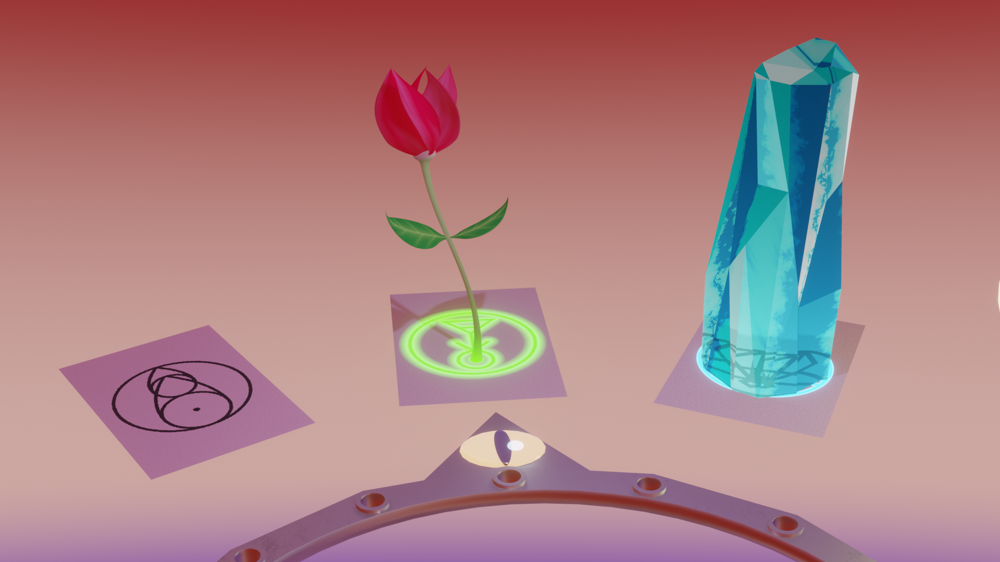
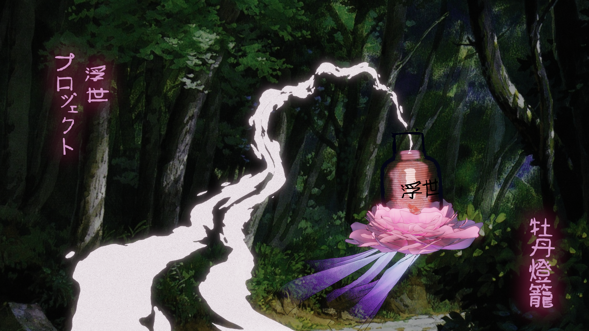

Reel Breakdown
Thanks for checking out my reel!
Here I go into some more detail on the creation behind these projects. Each project is also complete
with a full animation (or game link) and technical writeup if interested.
Note that all work is my own, other than concept and background illustration credited appropriately.
Do Witchcraft
Shading, Procedural Animation-Modeling, Lighting
Short film produced entirely from procedural programming;
3D modeling and animation are coded using Blender's geometry nodes feature and
all materials/textures are programmed with custom fragment shaders (also node-based).
Full Writeup, Breakdown, and Animation

Project:Ukiyo「浮世」
Shading, Lighting, Modeling, Composition + Layout
Short film developed for a great course on Japanese Literature, adapting an early ghost story.
Materials, composition, lighting, color, and framing here reference the "original" work, historical context,
and literary influence.
A broad use of technology is used here including: cloth simulation, substance painter,
procedural textures (node-based), geometry shaders (node-based), grease pencil (2D/3D text), and various lighting setups.
Full Writeup, Breakdown, and Video

Blackh01e
Shading
The black hole is entirely shader-based, realtime, and reactive to scene. Normals are reconstructed on a sphere
based on viewing angle for accurate refractions.
Accretion disk is created procedurally with parameters for color, speed, accretion amount, and sharpness.
Full Writeup, Breakdown, and Video

Gr@v:f\UX
Rendering Pipeline, Shaders, Procedural Geometry, Post Processing Shaders, Optimization
Completely coded from OpenGL, C, and GLSL to create an asteroid field without mesh or texture assets.
Full vertex-processing pipeline is utilized to tessellate icospheres into desired shape.
A ridged multifractal Musgrave texture is utilized for displacement, with Gouraud method to recalculate normals.
All shaders here were programmed from scratch (vertex, tessellation control+evaluation, and fragment).
Optimizations include camera-culling, dynamic level of detail on tessellation, backface culling, and 3D texture sampling of simplex noise for procedural Musgrave texture function (opposed to a GLSL function).
Full Breakdown and Video